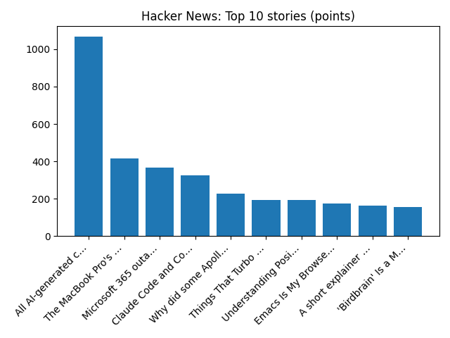

Black Friday and tax return scams - don't fall for these
BBC — Business
YOUR DAILY INTELLIGENCE BRIEF · 2026-11-16
Global watch: Black Friday and tax return scams - don't fall for these, Thousands of US flights still cancelled or delayed two days after grounding of planes nationwide.
Northern Virginia: Eddie O’Brien Obituary (2026) - Strasburg, VA - Northern Virginia Daily - Legacy | Obituary, Mary G. Porter Traditional in Woodbridge named top school in Northern Virginia - Prince William Times.

Global coverage includes Black Friday and tax return scams - don't fall for these; Thousands of US flights still cancelled or delayed two days after grounding of planes nationwide; Steering problem on tanker caused collision in New Orleans, NTSB says - Reuters. Local coverage includes Eddie O’Brien Obituary (2026) - Strasburg, VA - Northern Virginia Daily - Legacy | Obituary; Mary G. Porter Traditional in Woodbridge named top school in Northern Virginia - Prince William Times.

Sakaguchi Kiichiro
Sakaguchi Kiichiro (阪口喜一郎, Kiichiro Sakaguchi; January 1902 – December 1933) was a Japanese anti-war activist and a sailor in the Imperial Japanese Navy. During his service, he was active in anti-war activity.
https://en.wikipedia.org/wiki/Sakaguchi_Kiichiro
Runs so far today: 1